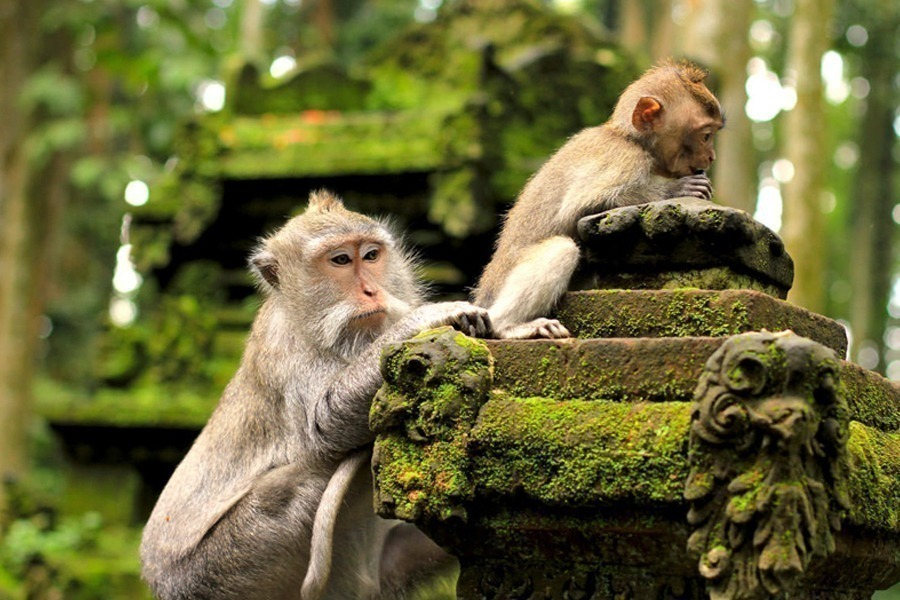
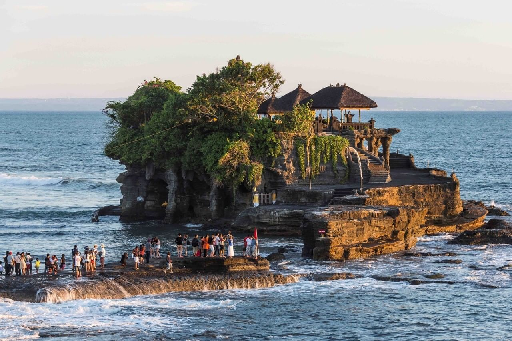

Balinese Tourist Places
Discover the heaven of the island of gods
NATURE
Ubud Monkey Forest.
The Monkey Forest Sanctuary is a natural habitat of Balinese long-tailed macaques. Located in Padangtegal Ubud, it is home to over 1000 monkeys and three beautiful Hindu temples nestled among dense green foliage.


CULTURE
Tanah Lot Temple.
Tanah Lot is an iconic rock formation off the Indonesian island of Bali. It is a home to the ancient Hindu pilgrimage temple Pura Tanah Lot, a popular tourist and cultural icon famous for its unique offshore setting and sunset backdrops.